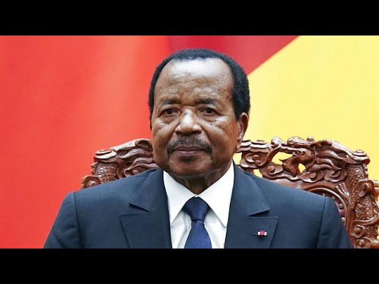
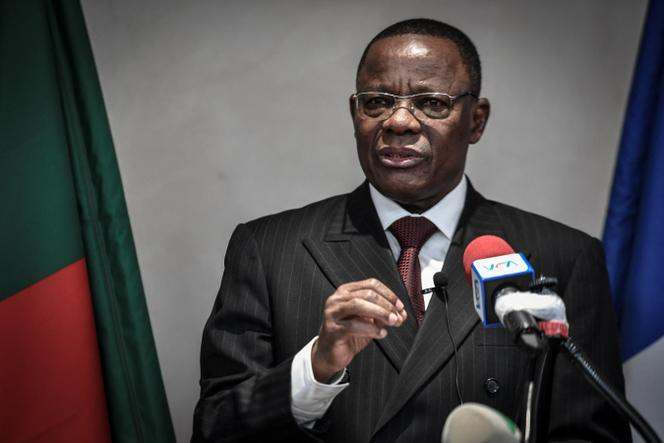
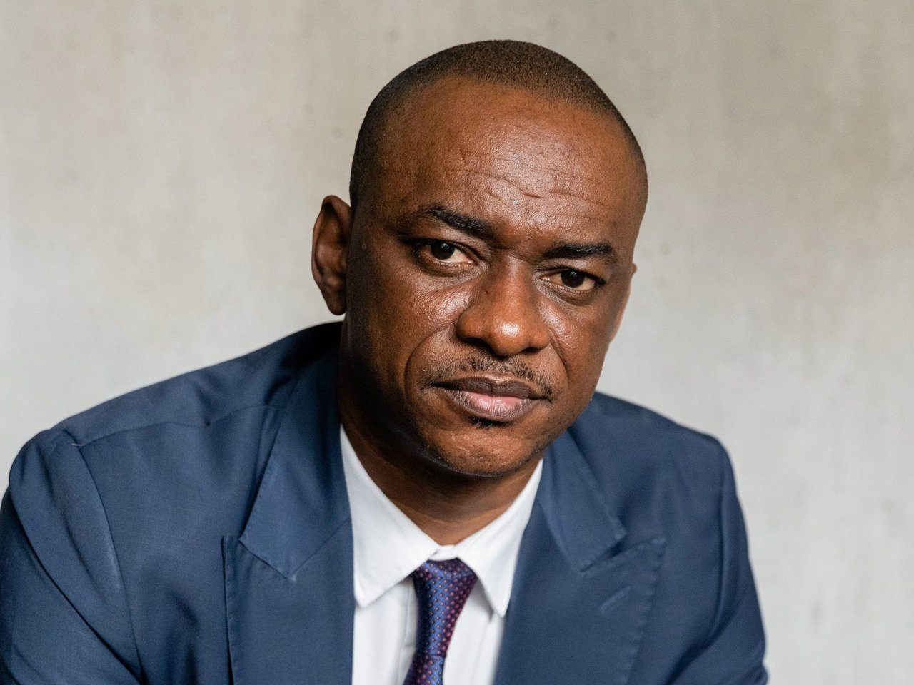
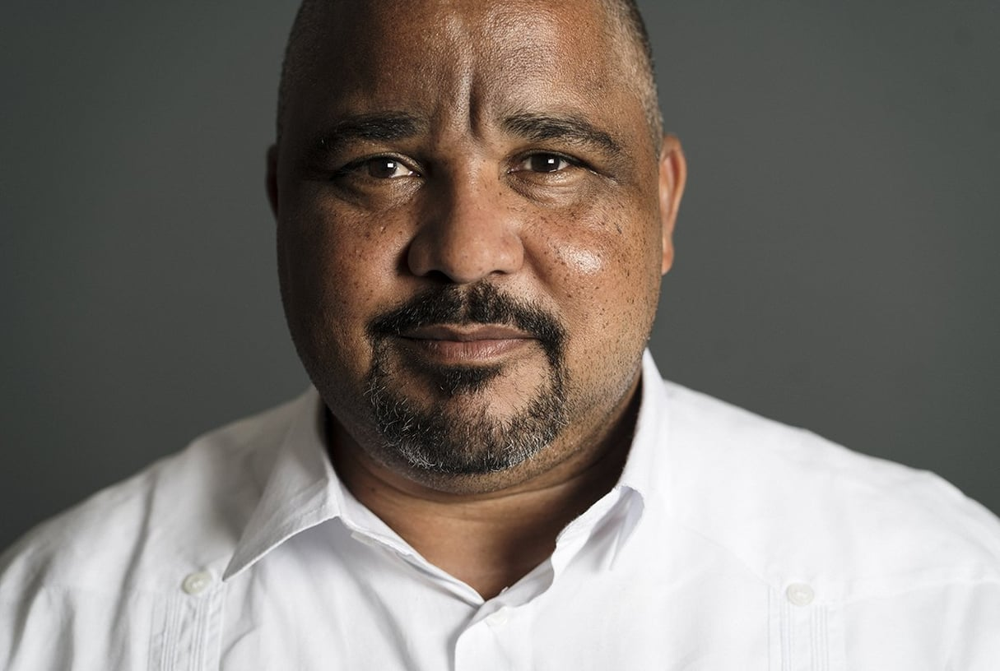
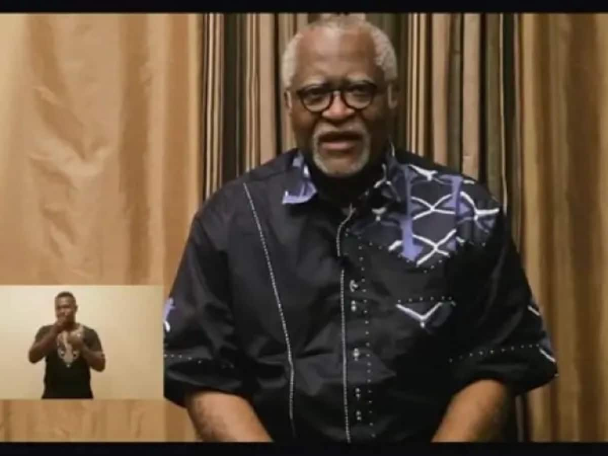

.jpg)
Introduction
L’élection présidentielle de 2025 au Cameroun s’annonce comme un moment charnière dans l’histoire politique du pays. Alors que le président Paul Biya, au pouvoir depuis 1982, entretient le suspense sur sa candidature, plusieurs figures politiques ont déjà déclaré leur intention de briguer la magistrature suprême. Cet article présente les principaux candidats, leurs partis politiques, leurs ambitions pour le Cameroun, et les enjeux qui pourraient marquer ce scrutin historique.
Les Candidats à l'Élection Présidentielle de 2025 au Cameroun
Paul Biya – Rassemblement Démocratique du Peuple Camerounais (RDPC)
Parti Politique : Rassemblement Démocratique du Peuple Camerounais (RDPC), au pouvoir depuis 1985. Ambitions : À 92 ans, Paul Biya reste le candidat naturel du RDPC. Bien qu’il n’ait pas officiellement annoncé sa candidature, ses partisans multiplient les appels pour qu’il se représente. Son programme s’articule autour de la continuité des politiques de stabilité, de développement des infrastructures et de modernisation des institutions. Cependant, ses détracteurs critiquent la gestion des crises anglophones, la corruption et la lenteur des réformes économiques39.
Analyse : Selon des médias comme CRTV et 237 Actu, l’entourage de Biya prépare activement sa candidature, malgré les interrogations sur son état de santé et son âge avancé. Si Biya ne se présente pas, son fils, Franck Biya, pourrait être pressenti comme successeur, bien que cela reste incertain410.
Maurice Kamto – Mouvement pour la Renaissance du Cameroun (MRC)
Parti Politique : Mouvement pour la Renaissance du Cameroun (MRC), principal parti d’opposition. Ambitions : Maurice Kamto, arrivé deuxième en 2018 avec 14,23 % des voix, se présente comme le défenseur d’un « Cameroun nouveau ». Il promet une refonte du système politique, une lutte contre la corruption et une résolution pacifique de la crise anglophone. Kamto mise sur une coalition, l’Alliance Politique pour le Changement (APC), pour renforcer son poids électoral38.
Cabral Libii – Parti Camerounais pour la Réconciliation Nationale (PCRN)
Parti Politique : Parti Camerounais pour la Réconciliation Nationale (PCRN). Ambitions : Cabral Libii, arrivé troisième en 2018, se positionne comme un candidat jeune et réformateur. Il prône une gouvernance inclusive, une économie numérique et une meilleure gestion des ressources naturelles. Libii vise à séduire les jeunes et les urbains, tout en proposant des solutions pour la crise anglophone38.
Analyse : Libii fait face à des tensions internes au sein du PCRN, notamment une plainte de Robert Kona, fondateur du parti, qui remet en question sa légitimité. Malgré ces défis, il reste un candidat crédible, soutenu par une base électorale dynamique410.
Joshua Osih – Social Democratic Front (SDF)
Parti Politique : Social Democratic Front (SDF), principal parti anglophone. Ambitions : Joshua Osih, arrivé quatrième en 2018, propose une « transition inclusive » pour le Cameroun. Il met l’accent sur la résolution de la crise anglophone, la décentralisation et la relance économique. Osih refuse l’idée d’une coalition unique de l’opposition, estimant qu’elle serait trop fragile face au pouvoir en place812.
Analyse : Le SDF, autrefois influent, voit son poids politique s’éroder. Osih devra redynamiser son parti et convaincre les électeurs anglophones, qui se tournent de plus en plus vers des mouvements séparatistes1012.
Akere Muna – Parti Univers
Parti Politique : Parti Univers. Ambitions : Akere Muna, ancien bâtonnier et figure de la société civile, se présente comme un candidat indépendant. Il met en avant son expérience dans la lutte contre la corruption et propose des réformes judiciaires et économiques pour améliorer le climat des affaires38.
Analyse : Bien que respecté pour son intégrité, Muna manque d’ancrage local et de ressources financières pour rivaliser avec les grands partis. Sa candidature reste symbolique, visant à inspirer un renouveau politique68.
Autres Candidats
- Serge Espoir Matomba (PURS) : Grand conseiller à la mairie de Douala, Matomba prône une candidature unique de l’opposition et une modernisation des institutions8.
- Jean Blaise Lucky Gwet (MPCC) : Leader d’un petit parti, Gwet propose des réformes sociales et économiques, mais son manque de soutien populaire limite ses chances8.
- Sucess Nkongho (MLC) : Réfugié politique au Nigeria, Nkongho défend les droits des anglophones, mais son parti n’a aucun élu8.
- Tomaino Ndam Njoya (UDC) : Figure historique de l’opposition, Njoya pourrait jouer un rôle de faiseur de roi en cas de second tour8.
Enjeux et Perspectives pour 2025
L’élection présidentielle de 2025 se déroulera dans un contexte marqué par plusieurs défis :
- La crise anglophone : Le conflit dans les régions du Nord-Ouest et du Sud-Ouest reste un enjeu majeur, avec des milliers de morts et de déplacés. Les candidats devront proposer des solutions crédibles pour ramener la paix912.
- La jeunesse et l’emploi : Avec plus de 60 % de la population âgée de moins de 25 ans, la création d’emplois et l’amélioration de l’éducation seront des priorités12.
- La corruption : La gestion des ressources publiques et la transparence dans les institutions restent des sujets sensibles pour les électeurs812.
Conclusion
L’élection de 2025 pourrait marquer un tournant pour le Cameroun, que Paul Biya se représente ou non. Les candidats devront convaincre une population en quête de changement tout en proposant des solutions concrètes aux problèmes du pays. Les médias camerounais, tels que CRTV, 237 Actu, et BBC Afrique, continueront de jouer un rôle crucial dans l’information et la sensibilisation des citoyens.
SourceSources : CRTV, 237 Actu, BBC Afrique, RFI, Cameroon Tribune, Jeune Afrique.
.jpeg)
.jpg)